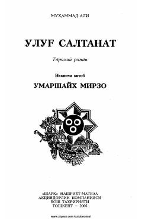

USAmir Temur davri tarixiga bag'ishlangan 'Ulug' saltanat' romanining ikkinchi kitobi.
Mazkur kitob O'zbekiston xalq yozuvchisi Muhammad Aliining Sohibqiron Amir Temur haqidagi mashhur 'Ulug' saltanat' tarixiy romanining ikkinchi kitobidir. Asar 'Umarshayx Mirzo' deb nomlanib, o'quvchilarni o'rta asrlar tarixi va Temuriylar davri voqealari bilan tanishtiradi.